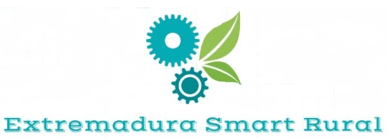

☰
Nuestros sensores miden las variables más importantes para conocer el estado fisiológico y ambiental del cultivo.
Los sensores instalados en un punto en concreto se conectan a nuestro módulo de comunicaciones formando lo que llamamos un nodo.
El módulo se encarga de tomar las medidas y enviarlas de forma inalámbrica hasta el servidor donde son almacenadas de forma segura.
El acceso a los datos se realiza a través del portal web que permite un acceso rápido e intuitivo a la información recogida por los nodos. Está diseñado para el acceso desde cualquier dispositivo ya sea ordenador, tablet o smartphone.